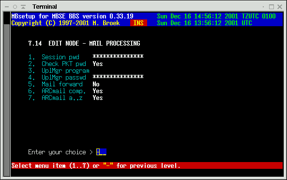
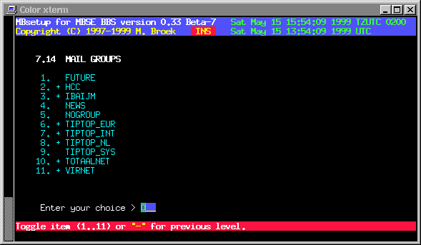
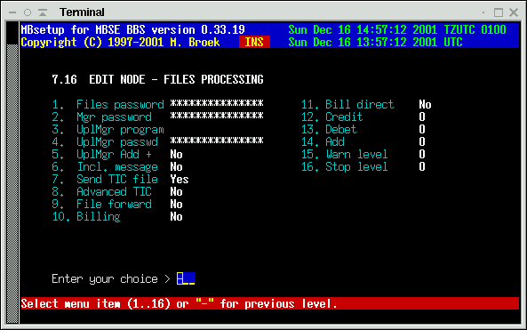
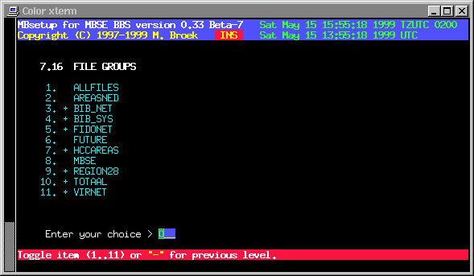
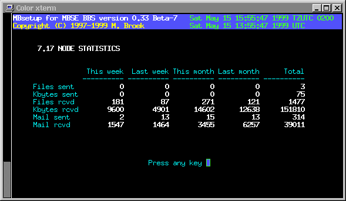

Last update 22-Jun-2001
MBSE BBS Setup - Fidonet nodes.
Introduction
Unlike many other bbs packages, for each node you need only one record. If you have a relation with a node for one network with costsharing, and other networks without costsharing you need two records for that node. For each node you can setup the aka's, mail, files and session handshake.
Main setup
Sysop name The name of the system operator.
Fido aka's Maximum 20 Fido addresses.
Dial command You can put an override here for the normal
dial command. If you leave this empty the
command from the modem setup is used.
Phone number 1 An alternative phone number/ip address to dial.
Phone number 2 An alternative phone number/ip address to dial.
Use these above commands if the node has
another phone number as mentioned in the
nodelist. If you call this node via TCP/IP
and the IP address can't be resolved by
the nodelist, you may enter an IP address
or hostname here.
Route via A route via Fido address. All mail for this
node will be send via this Aka, even mail
and files for other networks. This can be
usefull if this node has internet access
so you can send everything to this node
over the internet.
Netmail direct Set "direct" flag in netmail to this node.
Netmail crash Send netmail always "crash" to this node.
Netmail hold Put mail on "hold" for this node.
Send notify Send automatic generated notify messages.
Language The language to use (not yet working).
Deleted If this node must be deleted.
No EMSI Disable EMSI handshake.
No YooHoo/2U2 Disable FTSC-0006 handshake.
No Filerequest Disable filerquest from this node.
Don't call Do not call this node.
No Hold mail Only pickup mail if we call, send nothing.
Pickup primary Only exchange mail for one Aka.
No Zmodem Disable Zmodem protocol.
No Zedzap Disable Zedzap protocol.
No Hydra Disable Hydra protocol.
No TCP/IP Disbale TCP/IP protocol, forces dial only.

Mail setup
Session pwd The mailer session password.
Check PKT pwd Check password in received .pkt files. If not,
errors or missing passwords are only logged.
If set, errors or missing password are refused
and the .pkt files are renamed to .bad
UplMgr program The name of the Areamgr program of this node.
(This doesn't work yet).
UplMgr passwd The password for the Areamgr of this node.
Mail forward Not in use yet.
ARCmail comp. Use ARCmail 0.60 file naming convention for out of zone mail.
ARCmail a..z Allow a..z last character for ARCmail filenames.

Mail groups
Here you can tag which mail groups are available for this node. Note that all groups are visible here, even for networks this node has no aka's in. Be carefull not to allow a node to connect areas from networks he has no aka in.

File setup
Files password The password for .tic files. Mgr password The password for the Areamgr and Filemgr. UplMgr program The name of the Filemgr progrom of this node. UplMgr passwd The password of the Filemgr if this node. UplMgr Add + Add a "+" in the command to connect areas. Incl. message Send a netmail message for each file to send. Send TIC file Send .tic file to this node. Advanced TIC Send advanced or standard .tic files. File forward Forward TIC files for this node (not yet). Billing Is Costsharing active for this node. Bill direct Send the bill direct or on command. Credit The credit this node has in units. Debet The debet we have with this node (informational). Add Add (or substract) factor to the bill. Warn level The debet level when to write a warning mesage. Stop level The debet level when to stop sending files.

File groups
The same story as for mail groups is true for the file groups.

Statistics
In this statistics screen you can see the mail and files flow with this node. Values are stored for the current week, the previous week, the current month and previous month and the overall total since you defined this node. There are actual 12 months of statistics stored in the nodes record, only 2 are visible.
